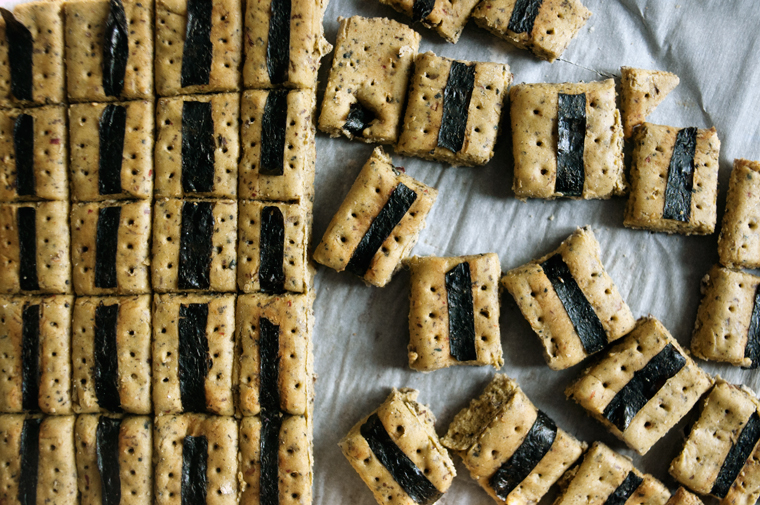

shichimi togarashi crackers
30 crackers — 40 minutes
I like making my own crackers, and to play around with different flavors. I enjoy the taste of the Japanese spice mix Shichimi Togarashi, which translates to '7-flavour chili pepper'.
How to make your own spice mix:
If you have a well-stocked spice rack, you can easily make it yourself. Mix together: 30 ml chili flakes, 15 ml sanshou (sichuan peppercorns), 15 ml dried orange peel, 15 ml black sesame seeds, 15 ml white sesame seeds, 10 ml ground ginger and 30 ml aonori.
Some people substitute sichuan peppercorns for black peppercorns - I don't reccommend doing that. They're not interchangeable, sichuan peppercorns are what makes it taste awesome. It's a numbing pepper, with a really distinctive taste and aroma. If you eat one peppercorn, you'll notice right away that it numbs your tongue and alters your sense of taste.
 chickpea flour 120 g
chickpea flour 120 g flax seeds 15 ml
flax seeds 15 ml baking soda 1/4 tsp
baking soda 1/4 tsp sesame oil 1/10 ml
sesame oil 1/10 ml shichimi togarashi 15 ml
shichimi togarashi 15 ml sea salt pinch
sea salt pinch water 60 ml
water 60 ml nori sheets 1 sheet
nori sheets 1 sheet
crackers
- Preheat oven to 180°C (350°F).
- In a bowl, combine 120 g (1 cup) chickpea flour, 15 ml (1 tbsp) ground flax seeds, a pinch of baking soda, 1/10 ml sesame oil, a pinch of sea salt and 15 ml (3 tsp) shichimi togarashi. Stir in 60 ml (1/4 cup) of water, mix until well combined and form into a ball. Add extra chickpea flour if the dough is too sticky, 15 ml at a time.
- Flatten ball of dough in-between two sheets of parchment paper with a rolling pin, get it into a 0.7cm thick rectangle.
- Cut about 1.2cm wide strips of nori and line on top of flattened dough, leaving some space between each piece. If the nori doesn't stick you can brush the top with a bit of soy sauce (or water).
- Slice the dough into squares and poke holes in with a toothpick so the crackers so they don't puff up. Place on a baking sheet and bake for 15-20 minutes or until golden brown.
- Let cool, snap pieces apart and enjoy!